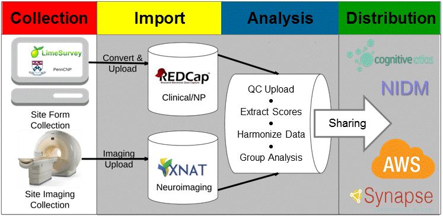

Overview
Scalable Informatics for Biomedical Imaging Studies (SIBIS) CNSLAB is a platform of linked and interoperable technologies for the management, analysis, and sharing of biomedical imaging data. The platform contributes new technologies that advance the understanding of normal biological structure and function and disease processes. SIBIS is central to the analysis performed by the Brain Addiction Laboratory (a joint research effort between SRI International and Stanford University) and its collaborators.

Building upon XNAT and REDCap, SIBIS automates electronic data capture, management, harmonization, quality control, analysis, and distribution of data collected by cross-sectional, single site as well as longitudinal, multi-site studies. All data collected using electronic data capture (e.g. WebCNP, LimeSurvey, Blaise, ePrime, and REDCap) are merged into a REDCap server hosted at SRI. Data items captured on laptops are automatically extracted, transformed into a compliant format, and loaded into REDCap from a secure and encrypted Subversion version control system. Imaging data is first uploaded from the collection site specific Picture Archiving and Communication Systems (PACS) to a XNAT server hosted at SRI. All data is evaluated with quality control checks that includes automatic test scoring, range validation, and a neuroradiologist report for incidental imaging findings. Issues identified during quality control are reported to the collection site. Once data passed the initial quality control, the data is processed for further analyses and backed up via Amazon Web Services (AWS). To distribute the processed data, SIBIS the platform has an integrated data release mechanism, which includes compliance with Neuroimaging Data Model (NIDM), enrichment with ontologies such as the Cognitive Atlas, and automatic uploads to data repositories such as Synapse.
Publications describing SIBIS:
-
B.N. Nichols and K.M. Pohl: Neuroinformatics Software Applications Supporting Electronic Data Capture, Management, and Sharing for the Neuroimaging Community , Neuropsychology Review, Volume 25, Issue 3, pp 356–368
-
T. Rohlfing, K. Cummins, T. Henthorn, W. Chu, B.N. Nichols: N-CANDA data integration: anatomy of an asynchronous infrastructure for multi-site, multi-instrument longitudinal data capture, Journal of the American Medical Informatics AssociationVolume 21, Issue 4Pp. 758 - 762.
-
K.M. Pohl, Edith V. Sullivan, Torsten Rohlfing, Weiwei Chu, Dongjin Kwon, B. Nolan Nichols, Yong Zhang, Sandra A. Brown, Susan F. Tapert, Kevin Cummins, Wesley K. Thompson, Ty Brumback, Ian M. Colrain, Fiona C. Baker, Devin Prouty, Michael D. De Bellis, James T. Voyvodic, Duncan B. Clark, Claudiu Schirda, Bonnie J. Nagel, Adolf Pfefferbaum: Harmonizing DTI measurements across scanners to examine the development of white matter microstructure in 803 adolescents of the NCANDA study NeuroImage, Volume 130, 15 April 2016, Pages 194–213
Download SIBIS:
- The individual software packages of SIBIS can be downloaded via github